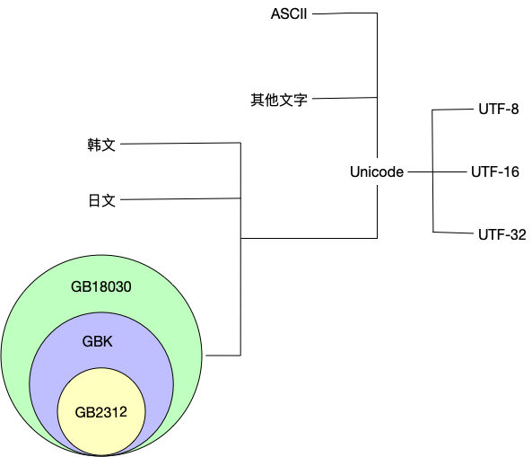
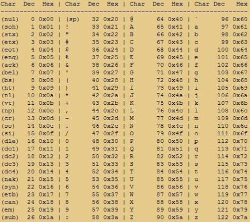

程序猿都遇到过文本编码问题，看到GB2312,GBK,GB18030,Unicode,UTF-8就觉得头大。希望通过此文，可以对文本编码可以有一个透彻的了解。
计算机发明之初为英文服务的，英文字符集十分有限，使用一个char就可以表示了。
但是随着计算机的发展，ASCII就没有办法支持中文等国家的文字；于是乎就有了GB2312中文编码，同样日文，韩文等都有属于自己的编码，想要在中文系统查看其它国家的文件就需要再按照另外的编码方式解码文件；如果各国文字混编就无能为力了。这种就需要一个一统江湖的编码标准来解决这个问题，即Unicode。
Unicode规定了每个数字对应的文字是什么，但是只是一个标准而已，为了解决文件编码之后空间大小问题，就有了不同的编码方式，即UTF-8，UTF-16，UTF-32. 就好比数字1，可以用char，short，int存，但是明显用char存更省空间。

ASCII

ASCII（American Standard Code for Information Interchange，美国信息交换标准代码）是基于拉丁字母的一套电脑编码系统，主要用于显示现代英语和其他西欧语言。
ASCII 码使用指定的7 位或8 位二进制数组合来表示128 或256 种可能的字符。标准ASCII 码也叫基础ASCII码，使用7 位二进制数（剩下的1位二进制为0）来表示所有的大写和小写字母，数字0 到9、标点符号， 以及在美式英语中使用的特殊控制字符。
比如0x41表示英文字母A
GB2312,GBK,GB18030
GB2312，GBK，GB18030都是中文的三种编码方式，按照包含文字数据由大到小依次为GB18030，GBK，GB2312；同时GB18030兼容GBK，GBK由兼容GB2312.
| 编码 | 字符数 | 字符种类 | 存储方式 | 兼容性 |
|---|---|---|---|---|
| GB2312 | 6763 | 常见汉字 | 双字节 | 兼容ASCII |
| GBK | 21886 | GB2312的汉字，Big5繁体字，其他 | 双字节 | 兼容GB2312 |
| GB18030 | 70244 | GBK的汉字，少数民族的汉字，日韩汉字 | 单字节，双字节，四字节 | 兼容GBK |
GB2312
GB 2312中对所收汉字进行了分区处理，每区含有94个汉字/符号，共计94个区。用所在的区和位来表示字符（实际上就是码位），因此称为区位码（或许叫区位号更为恰当）。表示方式也称为区位码。例如“万”字在45区82位，所以“万”字的区位码是：45 82（注意，GB类汉字编码为双字节编码，因此，45相当于高位字节，82相当于低位字节）。
可以理解为GB2312是一个二维数组，GB2312[45][82]=万。
- 01~09区（682个）：特殊符号、数字、英文字符、制表符等，包括拉丁字母、希腊字母、日文平假名及片假名字母、俄语西里尔字母等在内的682个全角字符；
- 10~15区：空区，留待扩展；在附录3，第10区推荐作为 GB 1988–80 中的94个图形字符区域（即第3区字符之半形版本）。
- 16~55区（3755个）：常用汉字（也称一级汉字），按拼音排序；
- 56~87区（3008个）：非常用汉字（也称二级汉字），按部首/笔画排序；
- 88~94区：空区，留待扩展。
每个汉字/符号使用两个字节表示，第一个字节成为高位字节，第二字节成为低位字节。高位字节使用0xA1-0xF7，即01-87的区号加上0xA0，低字节使用0xA1-0xFE，即把01-94加上0xA0。
举例: GB2312中第一个常用汉字是”啊”，即16区的第1个汉字是”啊”, 可以理解为GB2312[16][1]=啊，实际存储的时候，第一个字节为0xA0+16=0xB0, 第二个字节为0xA0+1 = 0xA1, 所以在GB2312编码中，0xB0 0xA1表示汉字”啊”。
GBK
GBK向下与 GB 2312 完全兼容，向上支持 ISO 10646 国际标准即UCS，在前者向后者过渡过程中起到的承上启下的作用。
GBK 采用双字节表示，总体编码范围为 8140-FEFE 之间，首字节在 81-FE 之间，尾字节在 40-FE 之间，剔除 XX7F 一条线。GBK 编码区分三部分：
- 汉字区 包括
GBK/2：OXBOA1-F7FE, 收录 GB 2312 汉字 6763 个，按原序排列；
GBK/3：OX8140-AOFE，收录 CJK 汉字 6080 个；
GBK/4：OXAA40-FEAO，收录 CJK 汉字和增补的汉字 8160 个。 - 图形符号区 包括
GBK/1：OXA1A1-A9FE，除 GB 2312 的符号外，还增补了其它符号
GBK/5：OXA840-A9AO，扩除非汉字区。 - 用户自定义区
GBK 区域中的空白区，用户可以自己定义字符。
GB18030
GB 18030 与 GB 2312-1980 和 GBK 兼容，共收录汉字70244个。
与 UTF-8 相同，采用多字节编码，每个字可以由 1 个、2 个或 4 个字节组成。
编码空间庞大，最多可定义 161 万个字符。
支持中国国内少数民族的文字，不需要动用造字区。
汉字收录范围包含繁体汉字以及日韩汉字
GB 18030 编码是一二四字节变长编码。
- 单字节，其值从 0 到 0x7F，与 ASCII 编码兼容。
- 双字节，第一个字节的值从 0x81 到 0xFE，第二个字节的值从 0x40 到 0xFE（不包括0x7F），与 GBK 标准兼容。
- 四字节，第一个字节的值从 0x81 到 0xFE，第二个字节的值从 0x30 到 0x39，第三个字节从0x81 到 0xFE，第四个字节从 0x30 到 0x39。
Unicode
世界上存在着多种编码方式，同一个二进制数字可以被解释成不同的符号。因此，要想打开一个文本文件，就必须知道它的编码方式，否则用错误的编码方式解读，就会出现乱码。为什么电子邮件常常出现乱码？就是因为发信人和收信人使用的编码方式不一样。
可以想象，如果有一种编码，将世界上所有的符号都纳入其中。每一个符号都给予一个独一无二的编码，那么乱码问题就会消失。这就是 Unicode，就像它的名字都表示的，这是一种所有符号的编码。
Unicode 当然是一个很大的集合，现在的规模可以容纳100多万个符号。每个符号的编码都不一样，比如，U+0639表示阿拉伯字母Ain，U+0041表示英语的大写字母A，U+4E25表示汉字严。具体的符号对应表，可以查询unicode.org，或者专门的汉字对应表。
Unicode编码范围是：0-0x10FFFF，可以容纳1114112个字符. 曾经有UCS-2，双字节编码，只支持65536个字符。
全世界的字符根本用不完了，Unicode 5.0版本中，才用了238605个码位。所以足够了。
因此从码位范围看，严格的unicode需要3个字节来存储。但是考虑到理解性和计算机处理的方便性，理论上还是用4个字节来描述。
UTF-8，UTF-16，UTF-32
UTF-8
UTF-8（UCS Transformation Format 8bit)，这个方案的意思以8位为单位来标识文字，注意并不是说一个文字用8位标识。他其实是一种MBCS方案，可变字节的。到底需要几个字节表示一个符号，这个要根据这个符号的unicode编码来决定，最多4个字节。
编码规则如下：
| Unicode编码(16进制) | UTF-8 字节流(二进制) |
|---|---|
| 000000 - 00007F | 0xxxxxxx |
| 000080 - 0007FF | 110xxxxx 10xxxxxx |
| 000800 - 00FFFF | 1110xxxx 10xxxxxx 10xxxxxx |
| 010000 - 10FFFF | 11110xxx 10xxxxxx 10xxxxxx 10xxxxxx |
UTF-8的特点是对不同范围的字符使用不同长度的编码。对于0x00-0x7F之间的字符，UTF-8编码与ASCII编码完全相同。
UTF-8编码的最大长度是4个字节。从上表可以看出，4字节模板有21个x，即可以容纳21位二进制数字。Unicode的最大码位0x10FFFF也只有21位。
例1：“汉”字的Unicode编码是0x6C49。0x6C49在0x0800-0xFFFF之间，使用用3字节模板了：1110xxxx 10xxxxxx 10xxxxxx。将0x6C49写成二进制是：0110 1100 0100 1001， 用这个比特流依次代替模板中的x，得到：1110011010110001 10001001，即E6 B1 89。
例2：Unicode编码0x20C30在0x010000-0x10FFFF之间，使用用4字节模板了：11110xxx 10xxxxxx 10xxxxxx 10xxxxxx。将0x20C30写成21位二进制数字（不足21位就在前面补0）：0 0010 0000 1100 0011 0000，用这个比特流依次代替模板中的x，得到：11110000 10100000 10110000 10110000，即F0 A0 B0 B0。
UTF-16
UTF16就好理解了，在这个规则下，每个符号最少占16bit。UTF16的规则说起来更简单，当符号位于0000-0xFFFF(BMP)中时，占用2byte，在符号位于0x10000-0x10FFFF(辅助平面)时，占用4byte。
UTF16这个转换的算法又是怎样的呢？
- 辅助平面的码位是U+10000到U+10FFFF，我们得到了一个辅助平面的Unicode码时，先减去BMP的码数0x10000，得到的数介于0到0xFFFFF之间，最多用20bit表示
- 然后我们把20bit从中间隔开，分为高位的10bit和低位的10bit
- 我们知道10bit的取值范围是0到0x3FF，高位的10bit加上固定值0xD800，得到的值叫做前导代理（lead surrogate），范围是0xD800到0xDBFF
- 低位的10bit加上固定值0xDC00，得到的值叫做后尾代理（tail surrogate），范围是0xDC00到0xDFFF。这样一来，不仅高位和低位都落在了保留区块内，而且彼此还做了区分。
还是举个例子。
Unicode码位是U+24B62是个异体字，通“碎”，位于辅助平面，我们来算一下它的UTF16编码结果
- 首先0x24B62减去10000得到0x14B62，根据这5个byte得到20bit，0001 0100 1011 0110 0010
- 然后分成高位的10bit（0001010010）和低位的10bit（1101100010）
- 高位+0xD800得到（1101 1000 0101 0010）
- 低位+0xDC00得到（1101 1111 0110 0010）
- 转换为16进制就是0xD852和0xDF62，这就是这个字的UTF16表示。
UTF-32
这个就简单了，和Unicode码表基本一一对应，固定四个字节。
为什么不采用UTF-32呢，因为unicode定义的范围太大了，其实99%的人使用的字符编码不会超过2个字节，所以如同统一用4个字节，简单倒是简单了，但是数据冗余确实太大了，不好，所以16位是最好的。就算遇到超过16位能表示的字符，我们也可以通过上面讲到的代理技术，采用32位标识，这样的方案是最好的。所以现在绝大部分机器实现unicode还是采用的utf-16的方案。当然也有UTF-8的方案。比如windows用的就是UTF16方案，不少linux用的就是utf8方案。
烫烫烫，屯屯屯，锟斤拷
相信很多人在windows平台遇到过”烫烫烫”，”屯屯屯”，”锟斤铐”等乱码。
在Windows下,未初始化的栈会初始化为0xcc, 未初始化的堆内存会初始化为0xcd, 而’烫’的gbk编码为0xCC 0xCC,而’屯’的gbk编码为0xCD 0xCD。
unicode暂时没用到码点会用占位符FFFD来表示, 如果这个占位符被错误解析, 就会被当作有意义的内容了。
unicode码0xFFFD的utf8编码为0xEF 0xBF 0xDB，汉字”锟斤拷”的gbk编码分别为0XEF 0xBF, oxDB 0xEF和0xBF 0xDB, 正好是两组unicode码0xFFFD的utf8编码的叠加。
因此如果平时遇到多个utf8编码的Unicode占位符且不巧用了gbk的方式解码,那就会看到熟悉的锟斤拷了。